Introduction
bb1840e4-5425-49a3-9d75-477b8f016ff8
Welcome to Implement a Public Key Infrastructure Practice Lab. In this module, you will be provided with the instructions and devices needed to develop your hands-on skills.
dc640c20-9434-45ea-b7c2-6d4d6a196bfc
Learning Outcomes
In this module, you will complete the following exercises:
- Exercise 1 - PKI Fundamentals
- Exercise 2 - Create a Self-signed Certificate
- Exercise 3 - Install and Configure Active Directory Certificate Services
- Exercise 4 - Configure Certificate Revocation Lists (CRLs)
- Exercise 5 - Manage Certificate Templates
- Exercise 6 - Configure Certificate Auto Enrollment
- Exercise 7 - Implement Key Archival
After completing this module, you should be able to:
- Create a Self-signed Certificate
- Install Active Directory Enterprise Root Certificate Service
- Configure Active Directory Certificate Services
- Install Subordinate CA
- Configure Subordinate CA
- Request User Certificates
- Verify Issued Certificate
- Configure a New Path for CRLs
- Add Certificate Managers
- View the Certificate Templates
- Configure a Customized Certificate Template
- Create a Group Policy for Certificate Auto Enrollment
- Verify the Certificate Issuance
- Enable a Key Recovery Agent
- Request for Key Recovery Agent Certificate
- Issue Key Recovery Agent Certificate
- Configure CA for Key Archival
After completing this module, you should have further knowledge of:
- PKI Concepts
- Types of Certificates
- Certificate Formats
Exam Objectives
The following exam objectives are covered in this lab:
3.9 Given a scenario, implement public key infrastructure.
- Public key infrastructure (PKI)
- Types of certificates
- Certificate formats
Note: Our main
focus is to cover the practical, hands-on aspects of the exam
objectives. We recommend referring to course material or a search engine
to research theoretical topics in more detail.
Lab Duration
It will take approximately 1 hour to complete this lab.
c6fa62a3-1a00-4052-8104-258e8cbaa187
Help and Support
For more information on using Practice Labs, please see our Help and Support page. You can also raise a technical support ticket from this page.
Click Next to view the Lab topology used in this module.
d2c53300-f951-45a9-9aa4-3d4ecae69e11
Lab Topology
During your session, you will have access to the following lab configuration.

Depending on the exercises, you may or may not use all
of the devices, but they are shown here in the layout to get an overall
understanding of the topology of the lab.
- PLABDC01 - Windows Server 2019 (Domain Controller)
- PLABDM01 - Windows Server 2019 (Domain Member Server)
- PLABWIN10 - Windows 10 (Domain Member Workstation)
- PLABKALI - Kali 2019.4 (Stand-alone device)
Click Next to proceed to the first exercise.
<
Home |
README >
CompTIA Security+ Practice Labs
Exercise 1 - PKI Fundamentals
The Public Key Infrastructure (PKI) is a hierarchy of
Certificate Authorities (CA) capable of issuing and signing digital
certificates. These certificates are used for validation, data
protection, and encryption for networked elements such as web servers,
users, and many other resources. The certificates can be issued for
various purposes, such as filesystem encryption to Email encryption.
Depending on your requirements, you can generate an appropriate type of
certificate for use.
In this exercise, you will learn about the PKI concepts.
Learning Outcomes
After completing this exercise, you should have further knowledge of:
- PKI Concepts
- Types of Certificates
- Certificate Formats
Your Devices
This exercise contains supporting materials for Security+.

PKI Concepts
Before starting to work on PKI and certificates, you
need to be familiar with various terms, which would help you gain a good
understanding of the PKI functionality. Let’s now learn about some of
the key terms.
Key Management
It is quite common to use encryption for encrypting
data. However, while attempting to safeguard the data, the users forget
to protect the keys used to encrypt the decrypted data. The private key,
which is the critical component, needs to be managed properly,
safeguarded, and protected from falling into a threat actor’s hands. An
individual or organization must practice proper key management
practices, which include storage, key handling, and its usage.
Certificate Authority (CA)
A CA is responsible for the entire certificate
management lifecycle and can issue or revoke certificates. Depending on
the type of certificate required, a CA can issue an appropriate type of
certificate to users and devices.
The hierarchy begins with a Root CA at the top and
with one or more levels of intermediate CA’s below it. In a simple
model, an intermediate CA is trusted by the authority granted to it by a
Root CA. However, there may be many levels of intermediate CA’s in an
actual PKI hierarchy.
For example, a web server operator needing a
certificate for SSL or TLS encryption would send a CSR (signing request)
to an “intermediate” CA. A Root CA does not generate a certificate for
the users and devices. It is responsible for generating the certificates
for one or more intermediate CAs.
In some scenarios, you can even create a self-signed
certificate, although outside elements will not trust it, and validation
errors may be raised. These are mainly used for testing.
Intermediate CA
A large enterprise can create its own Root CA, which
can delegate signing authority to intermediate CA servers. A web
browser looks at the domain name of a site it visits. It then begins the
process of chaining back from one signed certificate to another until
it reaches a root certificate signed by one of the certificates in its
root store. If it finds a root certificate in this manner, the site’s
certificate is accepted.
Registration Authority (RA)
When a client requests a certificate, it is the
Registration Authority (RA) to validate the request. If the validation
is successful, then the RA confirms to the CA that a certificate can be
issued based on the client’s request. It is important to note that the
RA never issues a certificate to the client. It is only responsible for
validating and sending the request to the CA.
Certificate Revocation List (CRL)
A CRL is a list that contains the names of two different types of certificates:
- Invalid certificates, which can include the expired certificates
- Revoked certificates, which have been revoked by a CA
A CRL contains the reason for the revocation of
certificates along with the dates when revocation took place. The CA
creates a certificate that maintains the CRL. To avoid anyone modifying
the CRL, digital signatures are used.
Certificate Attributes
A certificate has several fields with information.
These fields are known as the attributes that define the certificate.
For example, it has a Subject field, which provides the DName of the
client who owns the certificate. The DName field relates to the
Directory Name of the object. An attribute can be made of
attribute-value pairs, known as Relative Distinguished Names (RDNs). For
example:
- CN: CommonName
- OU: OrganizationalUnit
- O: Organization
- S: State
- C: Country
- L: Locality
For example, a certificate can have the following DName:
CN=PLAB Cert, OU=IT, O=Practice Labs, L=London 4, S=London, C=UK
Online Certificate Status Protocol (OCSP)
The OSCP protocol provides the online revocation
services, which help a client validate a serial number and provide the
certificate's status to the client. When a client sends a request to
check the certificate’s status, OSCP’s responder service checks the
status and shares it with the client. It could report the certificate
status as valid, revoked, or unknown.
Certificate Signing Request (CSR)
When a user requests a certificate from a CA, the
request goes in the form of a CSR, which contains the RSA-based public
key. The CSR also contains the required information that is needed for
the certificate. First, you need to generate private and public keys.
When a CSR is sent, the public key is sent in it. The CA takes the
public key and embeds it into the certificate that is issued to the
user.
Common Name (CN)
A CN represents the Fully Qualified Domain Name
(FQDN). When you create a CSR, you need to provide the CN, which should
be in the form of www.practicelabs.com or practicelabs.com.
Subject Alternative Name (SAN)
A SAN is a multi-purpose field in a certificate. For
different entities, it can serve different purposes. For example, when
using an SSL certificate, it can represent different domain names to
which the certificate applies. In the given exhibit, notice that SAN is
applicable for the SSL certificate used for *.google.com.
For entities, such as a user, a SAN can represent the
User Principal Name (UPN). For a computer or machine, it represents the
FQDN.
Figure 1.1 Screenshot of a certificate: Showing the Subject Alternative Name field highlighted.
Expiration
Each certificate has an expiration date. When you
have a certificate and a lot of other information, you would also see
the creation and the expiration date. When a certificate expires, it
cannot secure the transactions taking place on the Website to which the
certificate was attached. When you load the Website with an expired
certificate, the Web browser is likely to display a certificate
expiration warning.
Figure 1.2 Screenshot of a certificate: Showing the creation and the expiration dates of the certificate.
Online vs. Offline CA
A CA can be kept as online or offline depending on
its role and how frequently it needs to sign a certificate. A root CA
should always be kept offline. You would not need a root CA to sign
certificates regularly. The term offline means that the CA is not
actively generating certificates and is part of the network either in
the shutdown state or just not connected.
A root CA would sign the intermediate CA
certificates. Other than this, they have little role to play and must be
secured, which can be done by keeping them offline. An online
intermediate CA can handle CRLs, certificate validation requests, and
managing and distributing the certificates.
Stapling
When a user sends a certificate request, the
Responder information is also sent along with it. Imagine a scenario in
which a CA has to cater to thousands of requests simultaneously. It can
increase the load on the CA. Therefore, to reduce the load of the
server, the certificate request is sent with the Responder information.
This makes it a single request rather than two separate requests. This
process is known as stapling.
Pinning
Pinning is the process in which a digital certificate
is hard-coded within the application. Consider a scenario in which a
mobile connects to different networks as it moves around the city. To
ensure that the apps are not compromised, a digital certificate is used.
When a server needs to be validated, its public key is validated
against the certificate's hashed public key.
Trust Model
In a trust model, several components, such as
protocols, services, and devices, work together to achieve a certain
level of protection. The trust is easy to establish if it is a single
domain. However, there has to be a trust anchor if the trust needs to be
between two or more domains.
For example, if you and another user need to
communicate with each other using encrypted Emails, you may not trust
each other. However, when you see another user’s certificate, which has
been created by the same CA as yours, you would automatically develop
the trust. This is the case of a single domain where the same CA creates
the certificate.
However, there are chances that your CA may have to
trust another CA. The trust between two CA is developed using a trust
model, which can be of the following types:
Hierarchical: This is the most widely used
trust model. There is a root CA, then the intermediate, and then you can
also have the leaf CA, which is at the bottom of the hierarchy. The
entire hierarchy shares the root CA certificate and the public keys.
Peer-to-peer: In this model, there are CA, but
they are not subordinate to each other. Each CA issues certificate to
its entities. If a cross-certification between two CA is required, then
they need to certify the public key for each other. When they certify
the public key for each other, a bi-directional trust is created.
Hybrid: An organization may need to
communicate with partners, vendors, or even client organizations. Each
of them can have their own CA, which is using the hierarchical trust
model. However, to establish a trust between these CA, you can implement
the peer-to-peer trust model, where each CA certifies the public key
for each other.
Key escrow
For a user, private key management can be a difficult
task. To relieve the user from managing and securing the private key,
you can use the key escrow process, which uses a third-party to manage
the user's private key. In this process, the user’s private key is split
into two parts, which are encrypted. Each part of the private key is
then stored in a separate location. When the user needs to use the
private key, both the parts are retrieved and combined to create a copy
of the private key.
In the key escrow process, a copy of the private key
can always be retrieved. This process is also helpful when you have lost
the private key and need to retrieve it.
Certificate Chaining
In a certificate chain, the certificates trust each
other. The issuing of a certificate starts with the root certificate,
which is issued by the root CA. The root certificate is then used to
sign the intermediate certificate, which signs the certificate to the
user or any device. The user or device certificate trusts the
intermediate certificate issued by the intermediate CA. The intermediate
certificate trusts the root certificate. This creates a chain of trust
in which the certificates are chained.
Types of Certificates
Certificates can be broadly categorized into various categories. Some of the key ones are as follows:
Wildcard
In a normal scenario, a certificate is issued to a
single entity. Let’s assume a certificate is issued for
practicelabs.com. In this scenario, the certificate is valid only for
practicelabs.com. In a scenario where you have several entities, such as
www.practicelabs.com, web.practicelabs.com, cdn.practicelabs.com and
several more such examples. You require a certificate for all these
entities.
In such a scenario, you have two choices. The first
choice is that you can get an individual certificate for each of these
entities. Another option, which is better and more manageable, is to get
a wildcard certificate. The certificate would be issued to
*.practicelabs.com, which would be valid for entities, such as
www.practicelabs.com, web.practicelabs.com, cdn.practicelabs.com and so
on.
Figure 1.3 Screenshot of a certificate: Showing the wildcard certificate.
Subject Alternative Name (SAN)
A Subject Alternative Name (SAN) digital certificate
is more commonly known as a UCC certificate. UCC stands for Unified
Communications Certificate. A UCC certificate is used with unified
communication applications, such as Microsoft Exchange Server.
Code Signing
When developers write the code for an application,
they need to protect the code. To be able to do this, the developers can
use digital certificates and sign the code. Once the code is signed, it
prevents the code from being modified in an unauthorized way.
Self-Signed
Imagine that you have an internal Webserver that you
use for testing purposes. You want to integrate a certificate into this
Webserver but want to avoid spending money. To meet these requirements,
you can create a self-signed certificate. You, as the creator of the
certificate, attest it so that the Webserver can use it. A self-signed
certificate is an individual certificate and does not have a certificate
authority to work with. There are several network devices and
applications that use self-signed certificates.
Machine/Computer
Using a certificate authority, you can create a
machine or computer certificate, which can be used to verify its
identity. With a certificate, a network device can confirm an authentic
device and provide services for which it was commissioned. A machine or
computer certificate is used to authenticate it over the network.
Email
You can also create an Email digital certificate,
which a user can use to sign and encrypt outgoing messages. The same
certificate can be used to decrypt the incoming encrypted messages.
User
A user certificate identifies a user. For example,
when a user encrypts a hard drive using the Encrypting File System (EFS)
and later wants to decrypt it, the certificate is used to authenticate
the user.
Root
A root certificate is a certificate that is created
by the root CA. It is the first certificate in the trust chain. When a
root CA creates a certificate, it self-signs it, which becomes the root
certificate.
Domain Validation
Domain validation (DV) certificates validate an
organization’s permissions to use a specific domain name. This type of
certificate validates the identity of the organization that controls the
domain name.
The domain validation certificate displays a padlock
before the domain name. You can click on the padlock to view the
certificate information.
/
Extended Validation
An Extended Validation (EV) certificate is the
enhanced version of the domain validation certificate. The CA has to
perform various checks, such as the authenticity of the owner, the
organization, physical address, and the organization’s operations. The
Website owner must also prove its identity and its ownership of the
domain name. Just like the domain validation certificate, EV
certificates also add a padlock and company name before the Website name
in a Web browser’s address bar.
Certificate Formats
When creating a certificate, you can encode them in
different formats. Each encoded format can have a different extension.
Here are the certificate formats:
Distinguished encoding rules (DER): A CRT
extension denotes a certificate file encoded as a DER binary file or as
an ASCII file. If a certificate has the .der extension, then it is in
the binary form. A KEY file may also be encoded as a DER binary file or
as an ASCII. The DER format contains a key piece of information, which
is the binary data. It is mostly used as a single certificate.
Privacy enhanced mail (PEM): This format is
used for encrypting Email messages and ensures confidentiality and
integrity. A PEM-encoded CRT file is equivalent to a PEM encoded CER
file.
Personal information exchange (PFX): It is a
file format that is used for authentication of Websites as well as
applications. This type of certificate contains both the private and
public keys. A password also protects it.
.cer: A CER extension indicates a Microsoft version of a CRT certificate file.
P12: The P12 format is based on the standards defined by RSA Corporation. It also contains both the keys, public and private.
P7B: This format has the extension .p2b or
.p7c. This format only contains the public key, but not the private key.
It can also contain certificates, a certificate chain, and CRL.
7429868b-128c-4069-95a9-7246a6a9e5a3
<
Home |
README >
CompTIA Security+ Practice Labs
Exercise 2 - Create a Self-signed Certificate
A certificate is a method for securing communication
between users and a Web server or between two entities. If a
certificate, which can be SSL or TLS certificate, encrypts the
communication during transmission, it is hard to decipher the
information after capturing it. If a certificate is not used, the
information over the Internet travels in a clear-text format and can be
intercepted easily. SSL is now obsolete and has been replaced by TLS.
You can either use a third-party certificate or create a self-signed
certificate.
In this exercise, you will learn to create a self-signed certificate.
Learning Outcomes
After completing this exercise, you should be able to:
- Create a Self-signed Certificate
Your Devices
You will be using the following device in this lab. Please power this on now.
- PLABKALI - Kali 2020.3 (Stand-alone device)

Task 1 - Create a Self-signed Certificate
A self-signed certificate can be generated by anyone
and is used for personal or internal use in an organization. Web
browsers, however, do not trust self-signed certificates.
In this task, you will learn to create a self-signed
certificate. To create a self-signed certificate, perform the following
steps:
Step 1
Ensure that all the required devices are powered on. Connect to PLABKALI.
In the Enter your username text box, type the following:
root
In the Enter your password text box, type the following:
Passw0rd
Click Log In or press Enter.
 Figure 2.1 Screenshot of PLABKALI: Logging on to the Kali Linux.
Figure 2.1 Screenshot of PLABKALI: Logging on to the Kali Linux.
Step 2
After a successful login, the desktop is displayed.
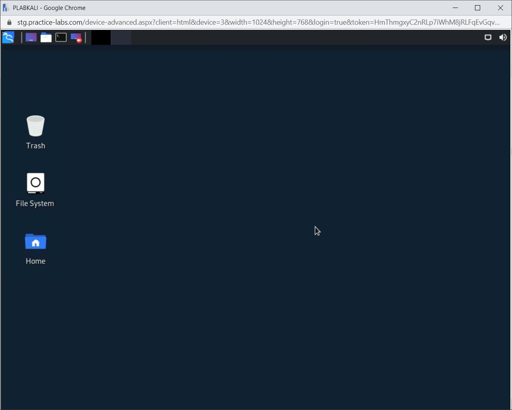Figure 2.2 Screenshot of PLABKALI: Displaying the desktop after the successful login.
Step 3
On the desktop, right-click and select Open Terminal Here.
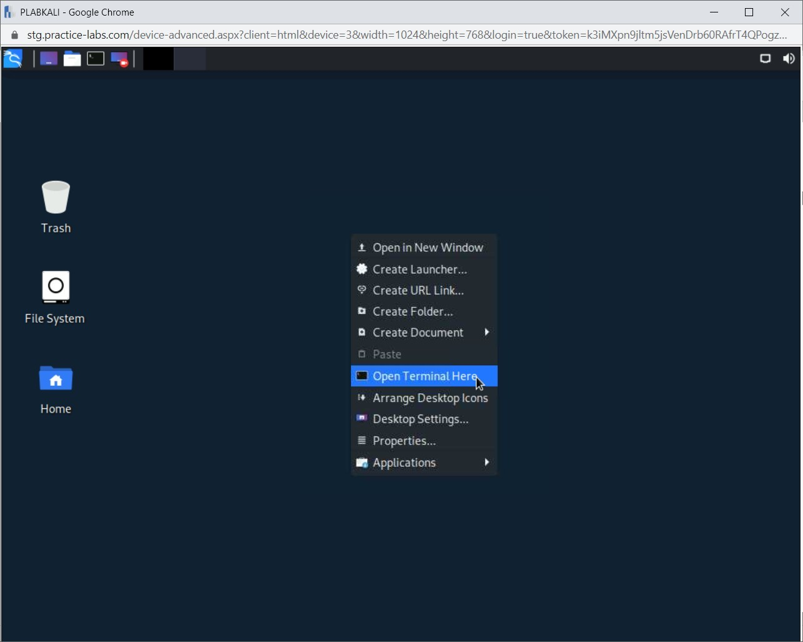Figure 2.3 Screenshot of PLABKALI: Selecting the Open Terminal Here option from the context menu.
Step 4
To create a self-signed certificate, you need to install the openssl package. Before proceeding with the installation, you can check if it is already installed. Type the following command:
openssl version
Figure 2.4 Screenshot of PLABKALI: Executing the openssl command to check its version.
Press Enter.
Step 5
Notice that the output displays the openssl version.
Figure 2.5 Screenshot of PLABKALI: Verifying the installed version of openssl.
Step 6
Clear the screen by entering the following command:
clear
First, you need to create a new directory for storing the private key. Type the following command:
mkdir -p /etc/ssl/private/plab
Press Enter.
Figure 2.6 Screenshot of PLABKALI: Creating a directory with the mkdir command.
Step 7
The directory is now created.
Figure 2.7 Screenshot of PLABKALI: Showing the successful execution of the mkdir command.
Step 8
You need to ensure that the directory is not readable by anyone except the root user. Type the following command:
chmod -R 700 /etc/ssl/private/plab
Press Enter.
Figure 2.8 Screenshot of PLABKALI: Changing the permission of the directory with the chmod command.
Step 9
Only the root user now has read, write, and execute permissions on this directory. Other users do not have any permissions.
Step 10
You need to now navigate to the newly-created directory. Type the following command:
cd /etc/ssl/private/plab
Press Enter.
Figure 2.10 Screenshot of PLABKALI: Navigating to the newly-created directory.
Step 11
Notice that you have navigated to the directory successfully.
Figure 2.11 Screenshot of PLABKALI: Showing the successful navigation to the newly-created directory.
Step 12
Clear the screen by entering the following command:
clear
You will now generate the key with the openssl command. Type the following command:
openssl genrsa -des3 -out plab.key 2048
Press Enter.
 Figure 2.12 Screenshot of PLABKALI: Generating the key with the openssl command.
Figure 2.12 Screenshot of PLABKALI: Generating the key with the openssl command.
Step 13
Notice that you are now prompted for a password.
Figure 2.13 Screenshot of PLABKALI: Generating the key with the openssl command.
Step 14
You need to now enter the passphrase. When prompted, type the following passphrase:
Passw0rd
Press Enter.
You will be prompted for the re-confirmation of the passphrase. Type the following:
Passw0rd
Press Enter.
Note: The cursor will not
move when prompted to enter a pass phrase in the terminal and it will
not be displayed while generating the key with the openssl command.
Figure 2.14 Screenshot of PLABKALI: Entering the passwords for the key being created.
Step 15
The password has now been set.
 Figure 2.15 Screenshot of PLABKALI: Showing the successful entry of the passwords.
Figure 2.15 Screenshot of PLABKALI: Showing the successful entry of the passwords.
Step 16
Clear the screen by entering the following command:
clear
You should now remove the passphrase from the private key. Type the following command:
openssl rsa -in plab.key -out plab.key
Press Enter. When prompted, type the following passphrase:
Passw0rd
Press Enter.
 Figure 2.16 Screenshot of PLABKALI: Removing the passphrase from the private key.
Figure 2.16 Screenshot of PLABKALI: Removing the passphrase from the private key.
Step 17
The passphrase is now removed from plab.key.
Figure 2.17 Screenshot of PLABKALI: Removing the passphrase from the private key.
Step 18
Clear the screen by entering the following command:
clear
As the next step, you need to generate the Certificate Signing Request (CSR). Type the following command:
openssl req -new -days 3650 -key plab.key -out plab.csr
Press Enter.
Figure 2.18 Screenshot of PLABKALI: Generating the Certificate Signing Request (CSR).
Step 19
When prompted for the country name, type the following command:
US
Press Enter.
Figure 2.19 Screenshot of PLABKALI: Entering the country name.
Step 20
You are now prompted for state or province name.
Figure 2.20 Screenshot of PLABKALI: Showing the prompt for state or province.
Step 21
When prompted for the state or province name, type the following command:
New Jersey
Press Enter.
Figure 2.21 Screenshot of PLABKALI: Entering the state name.
Step 22
You are now prompted for a locality name.
Figure 2.22 Screenshot of PLABKALI: Showing the prompt for the locality name.
Step 23
When prompted for the city name, type the following command:
Princeton
Press Enter.
Figure 2.23 Screenshot of PLABKALI: Entering the locality name.
Step 24
You are now prompted for the organization name.
Figure 2.24 Screenshot of PLABKALI: Showing the prompt for the organization name.
Step 25
When prompted for the organization name, type the following command:
Practice Labs
Press Enter.
Figure 2.25 Screenshot of PLABKALI: Entering the organization name.
Step 26
You are now prompted for the organizational unit.
Figure 2.26 Screenshot of PLABKALI: Prompting for the organizational unit.
Step 27
When prompted for the organizational unit name, type the following command:
IT
Press Enter.
Figure 2.27 Screenshot of PLABKALI: Entering the organizational unit name.
Step 28
You are now prompted for the common name.
Figure 2.28 Screenshot of PLABKALI: Prompting for the common name.
Step 29
When prompted for the common name, type the following command:
PLAB
Press Enter.
Figure 2.29 Screenshot of PLABKALI: Entering the common name.
Step 30
You are now prompted for the Email address.
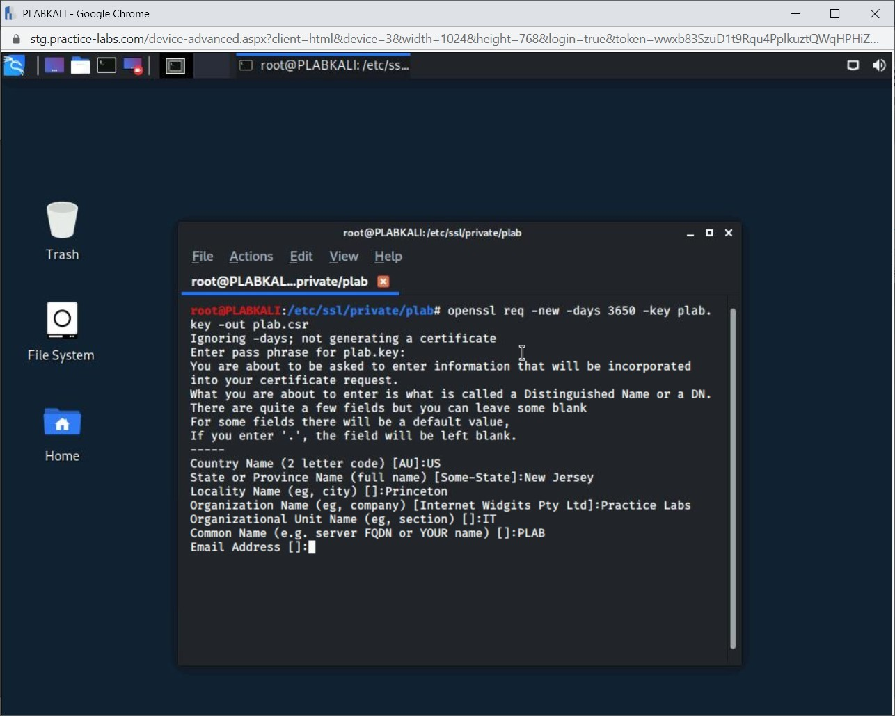Figure 2.30 Screenshot of PLABKALI: Prompting for the Email address.
Step 31
When prompted for the Email address, type the following command:
admin@practice-labs.com
Press Enter.
Figure 2.31 Screenshot of PLABKALI: Entering the Email name.
Step 32
You are now prompted for a challenge password.
Figure 2.33 Screenshot of PLABKALI: Prompting for a challenge password.
Step 33
When prompted for the challenge password, type the following command:
Passw0rd
Press Enter.
Figure 2.33 Screenshot of PLABKALI: Entering the challenge password.
Step 34
You are now prompted for an optional company name.
Figure 2.34 Screenshot of PLABKALI: Prompting for the optional company name.
Step 35
When prompted for an optional company name, press Enter. The CSR file is now generated.
Figure 2.35 Screenshot of PLABKALI: Skipping the company name.
Step 36
Clear the screen by entering the following command:
clear
You will now generate the certificate file from the CSR and the private key files. Type the following command:
openssl x509 -in plab.csr -out plab.crt -req -signkey plab.key -days 3650
Press Enter.
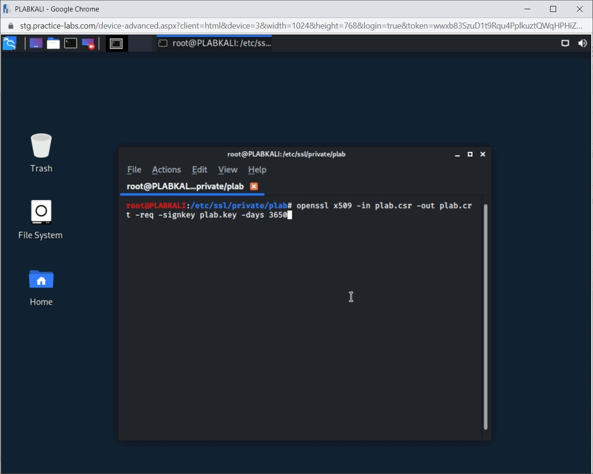Figure 2.36 Screenshot of PLABKALI: Generating the certificate file from the CSR and the private key files.
Step 37
The certificate file is now generated.
 Figure 2.37 Screenshot of PLABKALI: Showing the successful generation of the certificate.
Figure 2.37 Screenshot of PLABKALI: Showing the successful generation of the certificate.
Step 38
Clear the screen by entering the following command:
clear
You will use the chmod command to ensure that
these files are not accessible to other users. You will set the read
permission for the root user. Type the following command:
chmod 400 plab.*
Press Enter.
Figure 2.38 Screenshot of PLABKALI: Using the chmod command to change the permissions for the certificate files.
Step 39
Notice that you have changed the permissions for multiple files at once.
Figure 2.39 Screenshot of PLABKALI: Showing the successful execution of the chmod command.
Step 40
You will now create the symbolic links for the .csr
and .crt files. Type the following command to create the symbolic link
for the plab.key:
ln -s plab.key web.plab.key
Press Enter.
Figure 2.40 Screenshot of PLABKALI: Creating the symbolic link for the plab.key.
Step 41
To create the symbolic link for the plab.crt file, type the following command:
ln -s plab.crt web.plab.crt
Press Enter.
Figure 2.41 Screenshot of PLABKALI: Creating the symbolic link for the plab.crt.
Step 42
Clear the screen by entering the following command:
clear
You can list the files in the /plab directory. Type the following command:
ls -l
Press Enter.
Note: After creating the certificate, you can integrate it into the Web server, such as an Apache Web Server.
Figure 2.42 Screenshot of PLABKALI: Listing the files in the /plab directory.
80e3ace3-3818-477e-9d50-9fdfea66eb75
Close the terminal window.
Leave all devices in their current state and proceed to the next exercise.
<
Home |
README >
CompTIA Security+ Practice Labs
Exercise 3 - Install and Configure Active Directory Certificate Services
Active Directory Certificate Services (AD CS) allows
an organization to build public key infrastructure (PKI). It is intended
to provide the following capabilities:
- Public key cryptography
- Digital certificates
- Digital signature
In this exercise, you will install and configure Active Directory Certificate Services in a Windows domain environment.
To get a better understanding of this technology,
please refer to your course material or use your preferred search engine
to research this topic in more detail.
Learning Outcomes
After completing this exercise, you should be able to:
- Install Active Directory Enterprise Root Certificate Service
- Configure Active Directory Certificate Services
- Install Subordinate CA
- Configure Subordinate CA
Your Devices
You will be using the following devices in this lab. Please power these on now.
- PLABDC01 - Windows Server 2019 (Domain Controller)
- PLABDM01 - Windows Server 2019 (Domain Member Server)

Task 1 - Install Active Directory Enterprise Root Certificate Service
An Active Directory Enterprise CA is integrated with
the Active Directory. Any Root server is the first server for the CA. An
Enterprise CA can be configured to auto-enroll certificates in the
Active Directory environment.
In this task, you will install AD Certificate Services on the Domain Controller device.
Step 1
Ensure you have powered on the required devices in the lab environment.
Connect to PLABDC01.
The Server Manager window is displayed automatically.
Click Add roles and features.
Figure 3.1 Screenshot of PLABDC01: Server Manager console is displayed showing the Add roles and features link highlighted.
Step 2
On the Before you begin page of the Add Roles and Features Wizard, click Next.
Figure
3.2 Screenshot of PLABDC01: Before you begin page on the Add Roles and
Features Wizard is displayed, showing the Next button highlighted.
Step 3
On the Select installation type page, keep the default selection and click Next.
Figure
3.3 Screenshot of PLABDC01: Select installation type page on the Add
Roles and Features Wizard is displayed showing default settings and the
Next button highlighted.
Step 4
In Select destination server, keep the default options and click Next.
Figure
3.4 Screenshot of PLABDC01: Select destination server page on the Add
Roles and Features Wizard is displayed showing default settings and the
Next button highlighted.
Step 5
From the Select server roles page, select the Active Directory Certificate Services checkbox.
The Add Roles and Features Wizard automatically appears. Click Add Features.
Figure
3.5 Screenshot of the PLABDC01: Select server roles page on the Add
Roles and Features Wizard is displayed showing the Add Features button
highlighted.
Step 6
Back on the Select server roles page, notice the Active Directory Certificate Services checkbox is now selected.
Click Next to continue.
Figure
3.6 Screenshot of the PLABDC01: Select server roles page on the Add
Roles and Features Wizard is displayed showing the required selection
performed and the Next button highlighted.
Step 7
On the Select features page, keep the default settings and then click Next.
Figure
3.7 Screenshot of PLABDC01: Select features page on the Add Roles and
Features Wizard is displayed showing default settings and the Next
button highlighted.
Step 8
On the Active Directory Certificate Services page, read the given information and click Next.
Figure
3.8 Screenshot of PLABDC01: Active Directory Certificate Services page
on the Add Roles and Features Wizard is displayed with the Next button
highlighted.
Step 9
From the Select role services page, ensure that the Certification Authority checkbox is selected, and then select the Online Responder checkbox.
Figure
3.9 Screenshot of PLABDC01: Select role services page on the Add Roles
and Features Wizard is displayed with the required settings performed.
Step 10
The Add Roles and Features Wizard box appears as the component you selected will require other components for it to run.
Click Add Features to proceed.
Figure
3.10 Screenshot of PLABDC01: Add Roles and Features Wizard dialog box
is displayed showing default settings, and the Add Features button
highlighted.
Step 11
Back on the Select role services page, now, the Certification Authority and Online Responder checkboxes are selected.
Click Next.
Figure
3.11 Screenshot of PLABDC01: Select role services page on the Add Roles
and Features Wizard is displayed showing the required settings
performed, and the Next button highlighted.
Step 12
On the Web Server Role (IIS) page, read the given information and then click Next.
Figure
3.12 Screenshot of PLABDC01: Web Server Role (IIS) page on the Add
Roles and Features Wizard is displayed with the Next button highlighted.
Step 13
In the Select role services page, accept the default role services that will be added by IIS.
Click Next.
Figure
3.13 Screenshot of PLABDC01: Select role services page on the Add Roles
and Features Wizard is displayed showing default settings, and the Next
button highlighted.
Step 14
On the Confirm installation selections page, click Install.
Figure
3.14 Screenshot of PLABDC01: Confirm installation selections page on
the Add Roles, and Features Wizard is displayed showing the settings and
the Install button highlighted.
Step 15
The installation will begin, which will take a few minutes.
Important: If you get an error saying, “The request to add or remove features on the specified server failed.” Click Close.
This is caused when the Server Manager is busy collecting system
information on the server following a recent start-up or reboot. Wait
for about 1 minute and start over with the installation of the Windows
features in this task. If the same problem persists, restart the
affected computer and start over with installing the Windows features.
 Figure
3.15 Screenshot of PLABDC01: Installation progress page on the Add
Roles and Features Wizard is displayed listing details of the
installation.
Figure
3.15 Screenshot of PLABDC01: Installation progress page on the Add
Roles and Features Wizard is displayed listing details of the
installation.
Step 16
Click Close when Installation progress reports a successful operation. You are back on the Server Manager console.
Figure
3.16 Screenshot of PLABDC01: Installation progress page showing a
successful installation and the Close button highlighted.
Task 2 - Configure Active Directory Certificate Services
After a brief installation of Active Directory Certificate Services and Online Responder on PLABDC01, you must set up these services with the appropriate settings. This will enable these services to perform the intended roles.
To configure Active Directory Certificate Services, follow these steps:
Step 1
On PLABDC01, ensure that you are on the Server Manager console.
Click the flag icon and click the Configure Active Directory Certificate Services on the destination server link.
Figure
3.17 Screenshot of PLABDC01: Configure Active Directory Certificate
Services on the destination server link is displayed on the
Post-deployment Configuration information pane.
Step 2
On the Credentials page of the AD CS Configuration wizard, the system has detected that you are currently signed in as PRACTICELABS\Administrator.
Click Next.
Figure
3.18 Screenshot of PLABDC01: Credentials page on the AD CS
Configuration wizard is displayed showing the detected login
credentials, and the Next button highlighted.
Step 3
In Role Services, select the Certification Authority checkbox. There will be a momentary pause when you select this.
Then, select the Online Responder checkbox and click Next.
Figure
3.19 Screenshot of PLABDC01: Role Services page on the AD CS
Configuration wizard is displayed showing the required selections
performed and the Next button highlighted.
Step 4
On the Setup Type page, ensure that the Enterprise CA option is selected.
Click Next.
 Figure
3.20 Screenshot of PLABDC01: Setup Type page on the AD CS Configuration
wizard is displayed showing the required selection performed, and the
Next button highlighted.
Figure
3.20 Screenshot of PLABDC01: Setup Type page on the AD CS Configuration
wizard is displayed showing the required selection performed, and the
Next button highlighted.
Step 5
On the CA Type page, ensure that Root CA is selected.
Click Next.
Figure
3.21 Screenshot of PLABDC01: CA Type page on the AD CS Configuration
wizard is displayed showing default settings and the Next button
highlighted.
Step 6
On the Private Key page, verify that the Create a new private key radio button is selected.
Click Next.
Figure
3.22 Screenshot of PLABDC01: Private Key page on the AD CS
Configuration wizard is displayed showing the required selections
performed and the Next button highlighted.
Step 7
On the Cryptography for CA page, keep the default cryptographic settings and click Next.
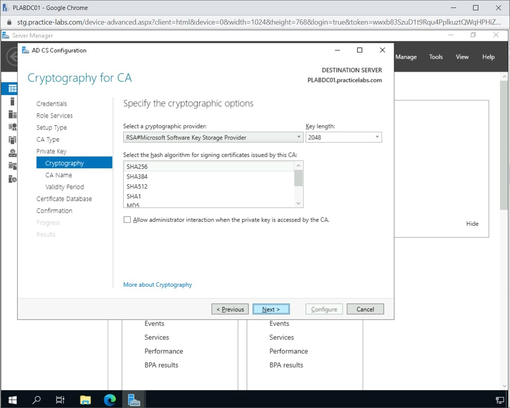Figure
3.23 Screenshot of PLABDC01: Cryptography for CA page on the AD CS
Configuration wizard is displayed showing default settings, and the Next
button highlighted.
Step 8
On the CA Name page, keep the default CA Name supplied by the AD CS Configuration and then click Next.
Figure
3.24 Screenshot of PLABDC01: CA Name page on the AD CS Configuration
wizard is displayed showing default settings, and the Next button
highlighted.
Step 9
On the Validity Period page, keep the default settings and click Next.
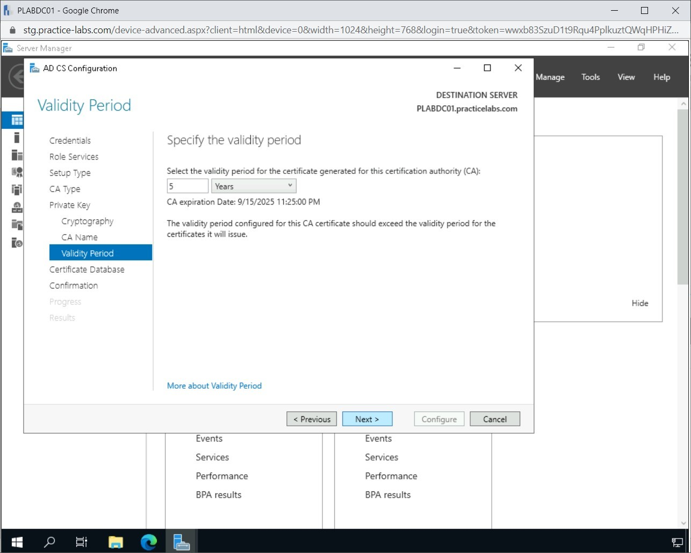Figure
3.25 Screenshot of PLABDC01: Validity Period page on the AD CS
Configuration wizard is displayed showing default settings, and the Next
button highlighted.
Step 10
On the CA Database page, keep the default settings and then click Next.
Figure
3.26 Screenshot of PLABDC01: CA Database page on the AD CS
Configuration wizard is displayed showing default settings, and the Next
button highlighted.
Step 11
On the Confirmation page, read through the summary settings of this Active Directory Certificate Services that are about to be set up.
Click Configure to proceed with the configuration of AD CS.
Figure
3.27 Screenshot of PLABDC01: Confirmation page on the AD CS
Configuration wizard is displayed listing the configuration settings,
and the Configure button highlighted.
Step 12
Please wait while the service is being set up.
On the Results page, when the results are displayed with Configuration succeeded, click Close.
Figure
3.28 Screenshot of PLABDC01: Results page on the AD CS Configuration
wizard is displayed showing the status of the configuration and the
Close button highlighted.
Step 13
You are back on the Server Manager console. You need to verify now that AD CS is working.
From the Server Manager console, click Tools and then select Certification Authority.
Figure 3.29 Screenshot of PLABDC01: Tools > Certification Authority menu-options are selected on the Server Manager console.
Step 14
Verify Certification Authority snap-in works by expanding the practicelabs-PLABDC01-CA node.
Note: The green tick mark indicates that the service has successfully started.
Minimize the Certification Authority and Server Manager windows.
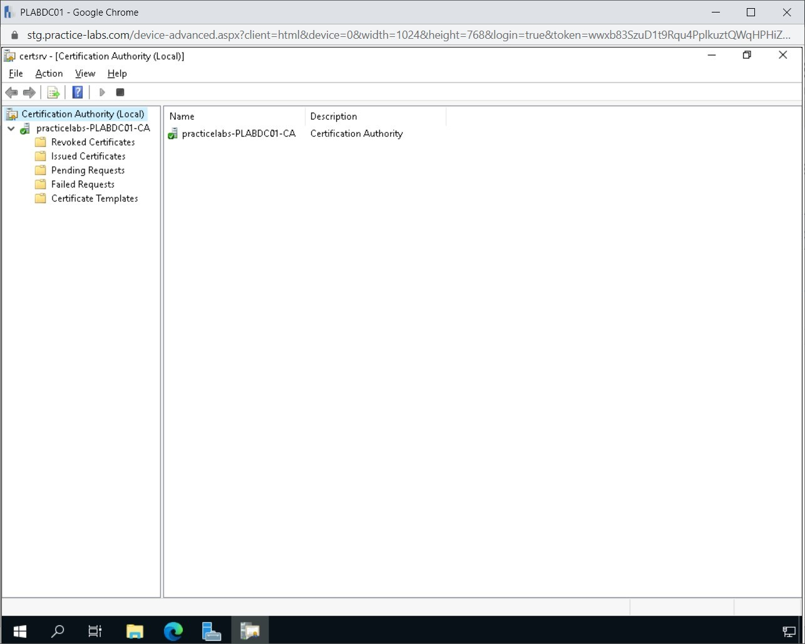Figure
3.30 Screenshot of PLABDC01: Certification Authority (Local) window is
displayed showing the green tick mark, confirming that the service is
successfully started on the PLABDC01 server.
Task 3 - Install Subordinate CA
In this task, you will install a subordinate CA of PracticeLabs.com on a domain member server called PLABDM01. You will follow the same steps that were done earlier when you installed the Enterprise Root CA.
To install the subordinate CA, follow these steps.
Step 1
Connect to PLABDM01.
The Server Manager console opens automatically.
Click Add roles and features.
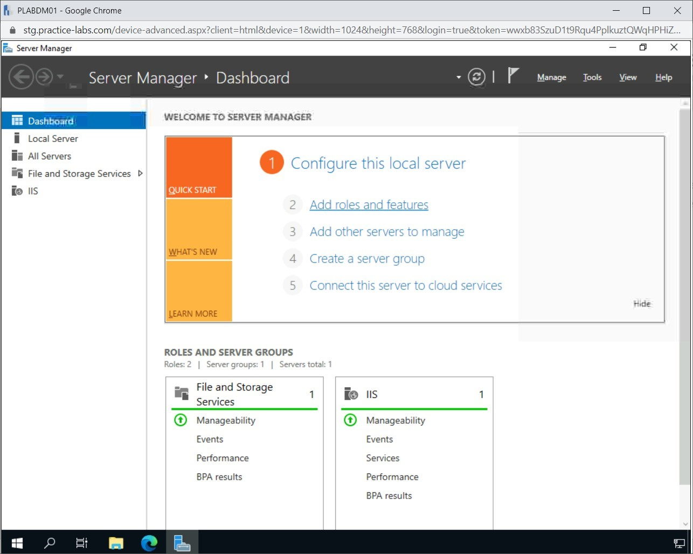Figure 3.31 Screenshot of PLABDM01: Server Manager console is displayed showing the Add roles and features link highlighted.
Step 2
On the Before you begin page of the Add Roles and Features Wizard, click Next.
Figure
3.32 Screenshot of PLABDM01: Before you begin page on the Add Roles and
Features Wizard is displayed, showing the Next button highlighted.
Step 3
On the Select installation type page, keep the default setting Role-based or feature-based installation option.
Click Next.
Figure
3.33 Screenshot of PLABDM01: Select installation type page on the Add
Roles and Features Wizard is displayed showing default settings, and the
Next button highlighted.
Step 4
From Select destination server page, click Next.
Figure
3.34 Screenshot of PLABDM01: Select destination server page on the Add
Roles and Features Wizard is displayed showing default settings, and the
Next button highlighted.
Step 5
From the Select server roles page, click the Active Directory Certificate Services checkbox.
Like in the earlier task, the Add Roles and Features Wizard appears. Other components are required to make Active Directory Certificate services work on this computer.
Click Add Features.
Figure
3.35 Screenshot of PLABDM01: Select server roles page on the Add Roles
and Features Wizard is displayed showing the Add Features button
selected.
Step 6
You are back on the Select server roles page.
Click Next.
Figure
3.36 Screenshot of PLABDM01: Select server roles page on the Add Roles
and Features Wizard is displayed showing the required selection
performed and the Next button highlighted.
Step 7
In the Select features page, keep the default settings and click Next.
 Figure
3.37 Screenshot of PLABDM01: Select features page on the Add Roles and
Features Wizard is displayed showing default settings and the Next
button highlighted.
Figure
3.37 Screenshot of PLABDM01: Select features page on the Add Roles and
Features Wizard is displayed showing default settings and the Next
button highlighted.
Step 8
On the Active Directory Certificate Services, click Next.
Figure
3.38 Screenshot of PLABDM01: Active Directory Certificate Services page
on the Add Roles and Features Wizard is displayed with the Next button
highlighted.
Step 9
In the Select role services page, select the Online Responder checkbox.
The Add Roles and Features Wizard is displayed.
Click Add Features.
Figure
3.39 Screenshot of PLABDM01: The Add Roles and Features dialog box
displays the required features, and the Add Features button highlighted.
Step 10
You are back on the Select role services page.
When both the Certification Authority and Online Responder are selected, click Next.
Figure
3.40 Screenshot of PLABDM01: Select role services page on the Add Roles
and Features Wizard is displayed showing the required settings
performed, and the Next button highlighted.
Step 11
In Confirm installation selections, click Install.
Figure
3.41 Screenshot of PLABDM01: Confirm installation selections page on
the Add Roles and Features Wizard is displayed showing the settings and
the Next button highlighted.
Step 12
On the Installation progress page, wait while the services and its components are getting installed.
When Installation progress is completed, click Close.
Important: If you get an error saying, “The request to add or remove features on the specified failed.” Click Close.
This is caused when the Server Manager is busy collecting system
information on the server following a recent start-up or reboot. Wait
for about 1 minute and start over with the installation of the Windows
features in this task. If the same problem persists, restart the
affected computer and start over with installing the Windows features.
Figure
3.42 Screenshot of PLABDM01: Installation progress page on the Add
Roles and Features Wizard is displayed listing details of installation,
and the Close button highlighted.
Task 4 - Configure Subordinate CA
After a brief installation of Active Directory
Certificate Services and Online Responder, you must set up this
Certificate service on PLABDM01 to assume the role of a subordinate CA to PLABDC01-PRACTICELABS.COM-CA.
To configure the Active Directory Certificate Services subordinate CA role, follow these steps:
Step 1
On PLABDM01, you are back in the Server Manager window.
Select the flag icon with an exclamation point and click the Configure Active Directory Certificate Services on the destination server link.
Figure
3.43 Screenshot of PLABDM01: Configure Active Directory Certificate
Services on the destination server link is displayed on the
Post-deployment Configuration information pane.
Step 2
On the Credentials page of the AD CS Configuration wizard, keep the default settings and click Next.
 Figure 3.44 Screenshot of PLABDM01: Credentials page on the AD CS Configuration wizard shows the detected credentials.
Figure 3.44 Screenshot of PLABDM01: Credentials page on the AD CS Configuration wizard shows the detected credentials.
Step 3
Similar to the task done earlier about configuring the Enterprise Root CA, select the Certification Authority and Online Responder checkboxes.
Then, click Next.
Figure
3.45 Screenshot of PLABDM01: Role Services page on the AD CS
Configuration wizard is displayed showing the required selections
performed and the Next button highlighted.
Step 4
In the Setup Type page, verify that the Enterprise CA radio button is selected.
Click Next to accept default settings.
Figure
3.46 Screenshot of PLABDM01: Setup Type page on the Add Roles and
Features Wizard is displayed showing default settings, and the Next
button highlighted.
Step 5
From CA Type, ensure that the Subordinate CA option is selected and click Next.
Figure
3.47 Screenshot of PLABDM01: CA Type page on the AD CS Configuration
wizard is displayed showing the selection of Subordinate CA and the Next
button highlighted.
Step 6
On the Private Key page, keep the default setting, Create a new private key and click Next.
 Figure
3.48 Screenshot of PLABDM01: Private Key page on the AD CS
Configuration wizard is displayed showing default settings and the Next
button highlighted.
Figure
3.48 Screenshot of PLABDM01: Private Key page on the AD CS
Configuration wizard is displayed showing default settings and the Next
button highlighted.
Step 7
On the Cryptography for CA page, change the Key length to 1024, and then click Next.
Figure
3.49 Screenshot of PLABDM01: Cryptography for CA page on the AD CS
Configuration wizard is displayed showing the required settings
performed, and the Next button highlighted.
Step 8
On the CA Name page, accept the name automatically assigned by Windows, click Next to continue.
Figure
3.50 Screenshot of PLABDM01: CA Name page on the AD CS Configuration
wizard is displayed showing default settings and the Next button
highlighted.
Step 9
On the Certificate Request page, select the following radio buttons:
- Send a certificate request to a parent CA
- CA Name
Click the Select… button next to the Parent CA text field.
Figure
3.51 Screenshot of PLABDM01: Certificate Request page on the AD CS
Configuration wizard is displayed showing the required settings
performed and the Select button highlighted.
Step 10
The Select Certification Authority dialog box displays the detected CA in the network called practicelabs-PLABDC01-CA automatically.
Keep the default selection and click OK.
Figure
3.52 Screenshot of PLABDM01: Select Certification Authority dialog box
on the AD CS Configuration wizard is displayed showing the detected CA
for the network of the local server, and the OK button highlighted.
Step 11
You are redirected back to the Certificate Request page.
It is now filled in with the correct information. Click Next.
Figure
3.53 Screenshot of PLABDM01: Certificate Request page on the AD CS
Configuration wizard shows the required settings performed, and the Next
button highlighted.
Step 12
On the CA Database page, keep the default settings and click Next.
Figure
3.54 Screenshot of PLABDM01: CA Database page on the AD CS
Configuration wizard is displayed showing default settings and the Next
button highlighted.
Step 13
On the Confirmation page, click Configure to proceed.
Figure
3.55 Screenshot of PLABDM01: Confirmation page on the AD CS
Configuration wizard is displayed showing default settings and the
Configure button highlighted.
Step 14
It will take a while for the subordinate CA to be configured on PLABDM01.
Server Manager will then report that Certification Authority and Online Responder are successfully configured. Click Close to close the AD CS Configuration wizard.
Figure
3.56 Screenshot of PLABDM01: Results page on the AD CS Configuration
wizard shows the status of the configuration, and the Close button
highlighted.
Step 15
You are redirected back to the Server Manager console.
Click on the refresh dashboard button to refresh the
display. You will notice that the red indicators on the different
sections of the console have disappeared.
This confirms that there are no errors in this CA configuration on this server.
Figure
3.57 Screenshot of PLABDM01: Task Details information pane is displayed
confirming successful feature installation and post-deployment
configuration.
89702e5d-d25a-44d4-b0df-b081bb2e2dbd
Leave all devices in their current state and proceed to the next exercise.
<
Home |
README >
CompTIA Security+ Practice Labs
Exercise 4 - Configure Certificate Revocation Lists (CRLs)
When a user certificate is revoked by an
administrator regardless of the reason, the Certificate Server records
that cancellation to prevent a user from reusing a revoked certificate.
In a large network, the revocation of the certificate must be replicated
to other CA servers to prevent canceled certificates from being used to
access network resources.
In this exercise, you will configure certificate revocation lists in Certificate Services.
Learning Outcomes
After completing this exercise, you should be able to:
- Request User Certificates
- Verify Issued Certificate
- Configure a New Path for CRLs
- Add Certificate Managers
Your Devices
You will be using the following devices in this lab. Please power these on now.
- PLABDC01 - Windows Server 2019 (Domain Controller)
- PLABDM01 - Windows Server 2019 (Domain Member Server)
- PLABWIN10 - Windows 10 (Domain Member Workstation)

Task 1 - Request User Certificates
Now that you have configured the CA servers, the next step is to ask for a certificate as an Active Directory user.
To request a user certificate using Windows 10, perform the following steps:
Step 1
You need to now disable the Server Auto Login feature on the Practice Labs platform. For more information on how to do this, please see the Help/Support page.
Note: You can find it via the following page:
https://help.practice-labs.com/practice-lab/settings-tab
There is a section for Server auto login.
Note: Once this setting has been toggled, you will need to re-connect to the device for it to take effect.
Once done, connect to PLABWIN10.
Figure 4.1 Screenshot of PLABWIN10: Login screen prompting the relevant password is displayed on the PLABWIN10 Windows desktop.
Step 2
On the windows login screen, click Other user.
Sign in with the following credentials and then press Enter:
Jan.Regus
Passw0rd
Press Enter.
Figure 4.2 Screenshot of PLABWIN10: Jan Regus Welcome screen on the PLABWIN10 Windows desktop is displayed.
Step 3
Note: When prompted with Additional Install - Security Warning dialog box, click Install. You will also be prompted with the BGInfo License Agreement dialog box. Click Agree.
In the Type here to search textbox, type the following text:
mmc
Select mmc from the Best match menu.
 Figure 4.3 Screenshot of PLABWIN10: Required text typed in the search text box on the Start menu is displayed.
Figure 4.3 Screenshot of PLABWIN10: Required text typed in the search text box on the Start menu is displayed.
Step 4
In Console1, click File and select Add/Remove Snap-in.
Figure 4.4 Screenshot of PLABWIN10: File > Add/Remove Snap-in menu-options are highlighted on the Console1 window.
Step 5
In the Add or Remove Snap-ins dialog box, select Certificates from the left pane and click Add.
Figure
4.5 Screenshot of PLABWIN10: Add or Remove Snap-ins dialog box is
displayed showing the required selection performed on the list at the
left and the Add button highlighted.
Step 6
Certificates - Current User is now added in the right pane.
Click OK to close the Add or Remove Snap-in dialog box.
Figure
4.6 Screenshot of PLABWIN10: Add or Remove Snap-ins dialog box is
displayed showing the required selection performed on the list at the
right pane, and then the OK button highlighted.
Step 7
From Console1, expand Certificates-Current User and then select Personal.
Right-click Personal and select All Tasks, then select Request New Certificate.
Figure
4.7 Screenshot of PLABWIN10: Context menu (that appears on
right-clicking the Personal folder) > All Tasks > Request New
Certificate menu-options are highlighted on the Console1 window.
Step 8
On the Before you Begin page of the Certificate Enrollment wizard, click Next.
Figure
4.8 Screenshot of PLABWIN10: Before You Begin page on the Certificate
Enrollment wizard is displayed with the Next button highlighted.
Step 9
On the Select Certificate Enrollment Policy page, ensure Active Directory Enrollment Policy is selected and click Next.
Figure
4.9 Screenshot of PLABWIN10: Select Certificate Enrollment Policy page
on the Certificate Enrollment wizard is displayed showing default
settings, and the Next button highlighted.
Step 10
In Request Certificates, click the User checkbox and click the Details down arrow button.
Alert: If there are no certificates listed, open a Command prompt as administrator and run:
gpupdate /force
Re-attempt from step 7 again.
Figure
4.10 Screenshot of PLABWIN10: Request Certificates page on the
Certificate Enrollment wizard is displayed showing the required
selection performed and the Details down-arrow button available.
Step 11
The details now display additional information about this certificate.
Click Properties.
Figure
4.11 Screenshot of PLABWIN10: Request Certificates page on the
Certificate Enrollment wizard shows additional information about the
selected certificate and the Properties button available.
Step 12
The Certificate Properties dialog box is displayed.
Click the Certification Authority tab.
Figure
4.12 Screenshot of PLABWIN10: Certification Authority tab on the
Certificate Properties dialog box on the Certificate Enrollment wizard
is displayed.
Step 13
On the Certification Authority tab, you will find the servers that can issue certificates to the user.
Deselect the practicelabs-PLABDC01-CA checkbox.
Leave the practicelabs-PLABDM01-CA checkbox selected.
Click OK.
Figure
4.13 Screenshot of PLABWIN10: Certification Authority tab on the
Certificate Properties dialog box shows the required settings performed,
and the OK button highlighted.
Step 14
Back in the Request Certificates dialog box, click Enroll.
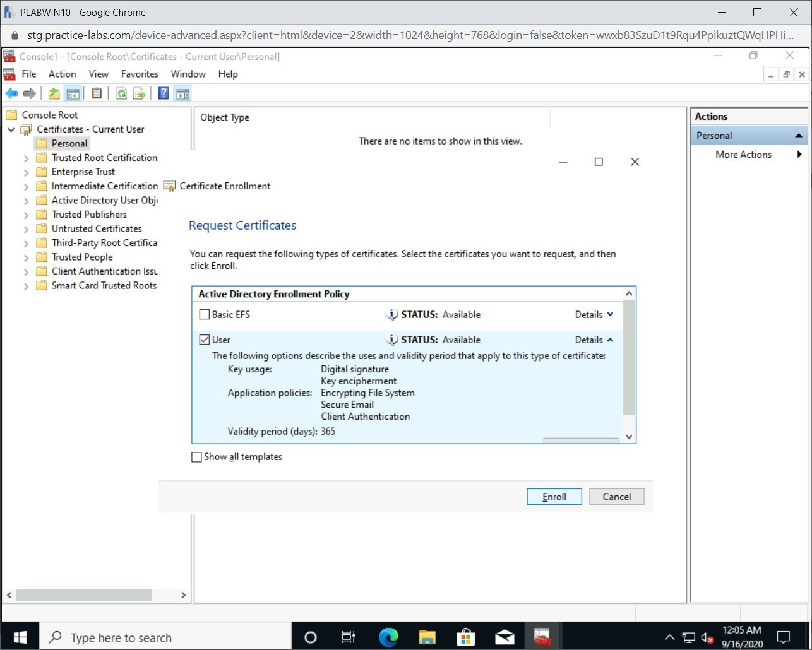Figure 4.14 Screenshot of PLABWIN10: The Request Certificates dialog box is displayed with the Enroll button highlighted.
Step 15
Wait for the enrolment to be completed.
Then click Finish when STATUS: Succeeded is displayed.
Figure
4.15 Screenshot of PLABWIN10: Certificate Installation Results page on
the Certificate Enrollment wizard is displayed showing enrolment
details, and the Finish button highlighted.
Step 16
Expand Personal and then click the Certificates folder.
A user certificate has now been issued to Jan Regus.
Figure 4.16 Screenshot of PLABWIN10: Console1 window is displayed listing the newly enrolled user certificate.
Task 2 - Verify Issued Certificate
Remember that during the certificate enrolment, you configured the PLABWIN10 computer to enroll with the PLABDM01 server.
In this task, you will verify the certificate issued to Jan Regus.
Step 1
Switch to the PLABDM01 device. Login with the Administrator account if the system is in a locked state.
Ensure that the Server Manager is open.
Click Tools and then select Certification Authority.
Figure
4.17 Screenshot of PLABDM01: Tools > Certification Authority
menu-options are highlighted on the Server Manager console.
Step 2
Certification Authority (Local) window opens.
Expand practicelabs-PLABDM01-CA and select the Issued Certificates folder. Notice that a certificate is issued to Jan Regus.
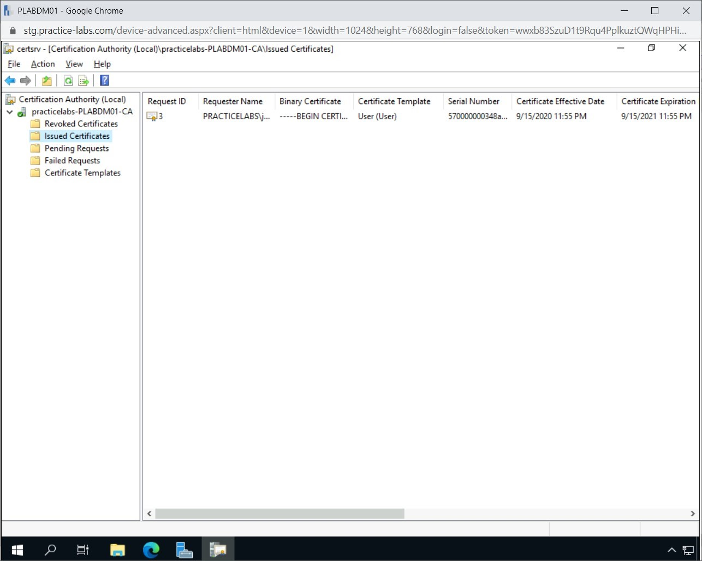Figure
4.18 Screenshot of PLABDM01: Required node path is selected on the
navigation pane at the left, and the relevant user certificate is listed
on the details pane at the right on the certsrv - Certification
Authority (Local) window.
Step 3
Right-click the PRACTICELABS\jan.regus certificate, select All Tasks and then select Revoke Certificate.
Figure
4.19 Screenshot of PLABDM01: Context menu (that appears on
right-clicking the name of an issued certificate) > All Tasks >
Revoke Certificate menu-options are highlighted on the certsrv -
Certification Authority (Local) window.
Step 4
On the Certificate Revocation dialog box, select Key Compromise and then click Yes.
Note: If the Reason code for certificate revocation is Certificate Hold, it can be unrevoked by the administrator.
Figure
4.20 Screenshot of PLABDM01: Certificate Revocation dialog box is
displayed showing the required settings performed, and the Yes button
highlighted.
Step 5
The Jan Regus' certificate disappears from the Issued Certificates folder.
Figure
4.21 Screenshot of PLABDM01: Required node path is selected on the
navigation pane at the left, and the relevant user certificate is
removed from the details pane at the right on the Issued Certificates
window.
Step 6
Click the Revoked Certificates folder.
The Revoked Certificates folder now displays the revoked certificate of user Jan Regus.
Figure
4.22 Screenshot of PLABDM01: Required node path is selected on the
navigation pane at the left, and the relevant user certificate is listed
on the details pane at the right on the Revoked Certificates window.
Step 7
You now need to publish the revoked certificates to other CA servers.
Right-click the Revoked Certificates folder and select All Tasks and then select Publish.
Figure
4.23 Screenshot of PLABDM01: Context menu (that appears on
right-clicking a certificate category) > All Tasks > Publish
menu-options are highlighted on the certsrv - Certification Authority
(Local) window.
Step 8
In the Publish CRL dialog box, ensure New CRL is selected.
Click OK.
Figure
4.24 Screenshot of PLABDM01: Publish CRL dialog box is displayed
showing the required selection performed and the OK button highlighted.
Step 9
Right-click the Revoked Certificates folder and select Properties.
Figure 4.25 Screenshot of PLABDM01: Right-clicking the Revoked Certificates folder and selecting Properties.
Step 10
In the Revoked Certificates Properties dialog box, the CRL Publishing Parameters tab displays the publication interval for New CRL and Delta CRLs (recent updates of revoked certificates).
Figure
4.26 Screenshot of PLABDM01: CRL Publishing Parameters tab on the
Revoked Certificates Properties dialog box shows the required
information.
Step 11
Click the View CRLs tab.
The View CRLs tab displays the publication status of CRLs.
Click OK.
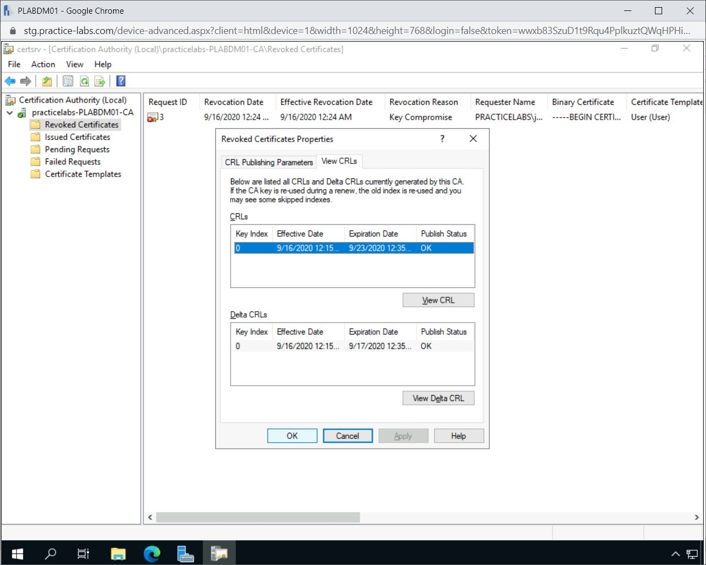Figure
4.27 Screenshot of PLABDM01: View CRLs tab on the Revoked Certificates
Properties dialog box shows the required information.
Keep the Certification Authority window open for the next task.
Task 3 - Configure a New Path for CRLs
It is also possible to configure a new path for the CRLs. To configure a new path for CRLs, follow these steps:
Step 1
On the PLABDM01 server, right-click practicelabs-PLABDM01-CA and select Properties.
Figure
4.28 Screenshot of PLABDM01: Showing the context menu (that appears on
right-clicking the Fully Qualified Domain Name of a certifying
authority, practicelabs-) > Properties menu-options are highlighted
on the certsrv - Certification Authority (Local) window.
Step 2
In the practicelabs-PLABDM01-CA Properties dialog box, click the Extensions tab.
Figure
4.29 Screenshot of PLABDM01: The practicelabs-PLABDM01-CA Properties
dialog box is displayed, and the Extensions tab is selected.
Step 3
Under the Extensions tab, click Add.
Figure
4.30 Screenshot of PLABDM01: Extensions tab on the
practicelabs-PLABDM01-CA Properties dialog box is displayed, showing the
Add button available.
Step 4
In the Add Location dialog box, in the Location text box, type:
\\plabdc01\sw
Figure 4.31 Screenshot of PLABDM01: Add Location dialog box is displayed showing the required value typed-in.
Step 5
From the Add Location dialog box, after adding the network path, put the cursor at the end of the network path location.
Click Insert.
Figure
4.32 Screenshot of PLABDM01: Add Location dialog box after adding the
network path is displayed, with the Insert button highlighted.
Step 6
You’ll see that <CaName> has appended at the end of network path \\plabdc01\sw.
Click OK.
Figure 4.33 Screenshot of PLABDM01: Add Location dialog box displays the required value inserted and the OK button highlighted.
Step 7
Click Apply to save changes in the Extensions tab.
When prompted to restart in the Certification Authority dialog box, click Yes.
Figure
4.34 Screenshot of PLABDM01: Certification Authority caution box is
displayed, prompting you to restart the active directory services and
the Yes button highlighted.
Task 4 - Add Certificate Managers
In the CA properties, you can restrict administration
permissions to specific individuals. For example, you can restrict
permission to Enterprise Admins in the Active Directory environment. You
can even designate an individual as a Certificate Manager
To configure certificate managers, follow these steps:
Step 1
Still on the PLABDM01 server, click the Certificate Managers tab.
Figure 4.35 Screenshot of PLABDM01: Clicking the Certificate Managers tab.
Step 2
On the Certificate Managers tab, select the Restrict certificate managers option.
Note: By
selecting this option, you will be restricting aspects of AD Certificate
Services administration to Domain Admins and Enterprise Admins groups
in this domain.
89702e5d-d25a-44d4-b0df-b081bb2e2dbd
Click OK.
Figure
4.36 Screenshot of PLABDM01: Certificate Managers tab on the
practicelabs-PLABDM01-CA Properties dialog box shows the required
settings performed and the OK button available.
Keep the certsrv - [Certification Authority (Local)] window open.
Leave all devices in their current state and proceed to the next exercise.
<
Home |
README >
CompTIA Security+ Practice Labs
Exercise 5 - Manage Certificate Templates
Certificate Templates, just like any other templates,
define the structure of a specific type of certificate. In the CA
console, you can define a certificate template that can be used to roll
out specific types of certificates to the clients. By default, several
templates are available. For example, there is a template available for
generating Web server certificates. There is another template that you
can use for implementing an Encrypting File System (EFS).
In this exercise, you will first install AD
Certificate Services and its required components and later customize the
certificate template properties.
Learning Outcomes
After completing this exercise, you should be able to:
- View the Certificate Templates
Your Devices
You will be using the following devices in this lab. Please power these on now.
- PLABDC01 - Windows Server 2019 (Domain Controller)
- PLABDM01 - Windows Server 2019 (Domain Member Server)
- PLABWIN10 - Windows 10 (Domain Member Workstation)
Task 1 - View the Certificate Templates
The certificate templates are listed in the
Certificate Templates node under the CA in the Certification Authority
window. In this task, you will view the certificate templates that are
provided by default. To do this, perform the following steps:
Step 1
Connect to PLABDM01 and log on with the Administrator account if the system is in the locked state.
Ensure that you are on the certsrv - [Certification Authority (Local)] window.
Figure 5.1 Screenshot of PLABDM01: The certsrv - [Certification Authority (Local)] window is displayed.
Step 2
Click the Certificate Templates folder. The details pane of the Certificates Template folder at the right indicates the type of certificates issued by PLABDM01.
Figure
5.2 Screenshot of PLABDM01: Certificate Templates folder is highlighted
in the left pane, and its contents are displayed in the right pane.
Step 3
In the right pane, double-click the User template.
Figure 5.3 Screenshot of PLABDM01: Double-clicking the User template.
Step 4
The User Properties dialog box is displayed. Notice the purposes listed in the Certificate Purposes section.
The certificate created with the User template can be used to encrypt
the file system, secure Email, and perform client authentication.
Figure 5.4 Screenshot of PLABDM01: The User Properties dialog box is displayed.
89702e5d-d25a-44d4-b0df-b081bb2e2dbd
Click Cancel to close the dialog box.
Keep the certsrv - [Certification Authority (Local)] window open.
Leave all devices in their current state and proceed to the next exercise.
<
Home |
README >
CompTIA Security+ Practice Labs
Exercise 6 - Configure Certificate Auto Enrollment
Enrollment for a machine or user certificate can be
done manually using the certificates request wizard through the
Microsoft Management Console (MMC) in a small organization. For big
companies that maintain hundreds of network users, certificate
enrollment can be streamlined by customizing a certificate template. A
customized certificate template allows you to set properties such as
auto enrollment and simplify certificates deployment to domain users
using Group Policy Objects.
In this exercise, you will learn how to manage
certificates by setting different properties for a custom template, such
as security, which indicates which user or security group has access to
the certificate, timeline that illustrates the validity of an issued
certificate and other properties relating to a certificate template.
To learn more about managing certificate templates
and enrollment, please refer to your course material or use your
preferred search engine to research this topic in more detail.
Learning Outcomes
After completing this exercise, you should be able to:
- Configure a Customized Certificate Template
- Create a Group Policy for Certificate Auto Enrollment
- Verify the Certificate Issuance
Your Devices
You will be using the following devices in this lab. Please power these on now.
- PLABDC01 - Windows Server 2019 (Domain Controller)
- PLABDM01 - Windows Server 2019 (Domain Member Server)
- PLABWIN10 - Windows 10 (Domain Member Workstation)

Task 1 - Configure a Customized Certificate Template
You can also create a customized certificate
template. You can take an existing template and customize it as per your
organization’s needs.
To set up a customized certificate template, perform the following steps:
Step 1
On PLABDM01, the Certification Authority console window is open.
Right-click the Certificate Templates folder and select Manage.
Figure
6.1 Screenshot of PLABDM01: Right-clicking the Certificate Templates
folder and selecting Manage option from the context menu.
Step 2
The Certificate Templates Console window opens.
Scroll down the templates list and right-click on User, and then select Duplicate Template.
Figure
6.2 Screenshot of PLABDM01: The Certification Templates console window
is displayed with User right-clicked and selecting Duplicate Template
from the context menu.
Step 3
On the Properties of New Template dialog box, click the General tab.
Figure 6.3 Screenshot of PLABDM01: Clicking the General tab in the Properties of New Template dialog box.
Step 4
In the General tab, click inside the Template display name text box and type-over the existing text with the following and then click Apply.
SecureUser
Figure 6.4 Screenshot of PLABDM01: The Properties of New Template dialog box is displayed with the required text typed in.
Step 5
Then, click the Request Handling tab.
Figure 6.5 Screenshot of PLABDM01: Clicking the Request Handling tab on the Properties of New Template dialog box.
Step 6
In the Request Handling tab, select Prompt the user during enrollment option.
Click Apply.
Note: For this
lab, we will use this option to Prompt the user during enrolment. In an
actual deployment, users are not prompted by any message when they are
automatically enrolled for a certificate.
Figure
6.6 Screenshot of PLABDM01: The Properties of New Template dialog box
is displayed with the required selection made on the Request Handling
tab.
Step 7
Then, click the Security tab.
Figure 6.7 Screenshot of PLABDM01: Clicking the Security tab on the Properties of New Template dialog box.
Step 8
In the Security tab, ensure that the Authenticated Users security group is selected.
Under the Permissions for Authenticated Users section, select the Autoenroll checkbox.
Click Apply.
Figure
6.8 Screenshot of PLABDM01: The Properties of New Template dialog box
is displayed with the required selection made on the Security tab.
Step 9
Then, select the Superseded Templates tab.
Figure 6.9 Screenshot of PLABDM01: Clicking the Suspended Templates tab on the Properties of New Template dialog box.
Step 10
In the Superseded Templates folder tab, click Add.
Figure
6.10 Screenshot of PLABDM01: The Properties of New Template dialog box
is displayed with the Add button selected on the Superseded Templates
tab.
Step 11
In the Add Superseded Template dialog box, scroll down the list of certificate templates and select User.
Click OK.
Figure 6.11 Screenshot of PLABDM01: The Add Superseded Template dialog box is displayed with the required option selected.
Step 12
Back in the Superseded Templates tab, the User template is now added.
Click Apply.
Figure
6.12 Screenshot of PLABDM01: The Properties of New Template dialog box
is displayed with the new template added on the Superseded Templates
dialog box.
Step 13
Then, select the Subject Name tab.
Figure 6.13 Screenshot of PLABDM01: Clicking the Subject Name tab on the Properties of New Template dialog box.
Step 14
In the Subject Name tab, clear the following checkboxes:
- Include e-mail name in subject name
- E-mail name
Click OK.
Note: You cleared the two checkboxes as AD users in the Practice Labs domain do not have those attributes defined in their accounts.
Figure
6.14 Screenshot of PLABDM01: The Properties of New Template dialog box
is displayed with the required options cleared on the Subject Name tab.
Step 15
Close the Certificate Templates Console window.
Figure 6.15 Screenshot of PLABDM01: Closing the Certificate Templates Console window.
Step 16
Next, you need to include the SecureUser certificate template in the list of certificates issued by PLABDM01.
Ensure that you are back on the Certification Authority console window.
Right-click the Certificate Templates folder, select New and then select Certificate Template to Issue.
Figure
6.16 Screenshot of PLABDM01: In the Certification Authority console
window, right-clicking the Certificate Templates node and selecting New
and then selecting Certificate Template to Issue.
Step 17
In the Enable Certificate Templates dialog box, scroll down the list of templates, select SecureUser and then click OK.
Figure 6.17 Screenshot of PLABDM01: Selecting the SecureUser template in the Enable Certificate Templates dialog box.
Step 18
Note: If you get a system message indicating that the certificate couldn’t be added this time, click Cancel. This can happen due to some system delays in the Certification Authority Server.
Start over with Step 16 to attempt to add the new certificate template.
You have just added the SecureUser template as one of the certificate templates that can be issued.
Minimize the Certification Authority window as you will need this application in a later task.
Figure
6.18 Screenshot of PLABDM01: Showing the added SecureUser template as
one of the certificate templates that can be issued in the Certification
Authority console.
Task 2 - Create a Group Policy for Certificate Auto Enrollment
For the certificate auto enrollment in the Windows
domain, you need to configure Group Policy. When Group Policy is
enabled, the certificate enrollment is automated, and as the
certificates are deployed for the users and devices, they get it without
any manual intervention.
In this task, you will create a Group Policy Object to automate the deployment of user certificates to domain network users.
Step 1
Connect to PLABDC01. Log on with the Administrator account.
In the Server Manager > Dashboard window, click the Tools menu and select Group Policy Management.
Figure
6.19 Screenshot of PLABDC01: Selecting the Group Policy Management
option from the Tools menu in the Server Manager window.
Step 2
In the Group Policy Management console window, expand Forest: practicelabs.com > Domains > practicelabs.com.
Right-click the practicelabs.com domain and select Create a GPO in this domain, and link it here.
Figure
6.20 Screenshot of PLABDC01: Showing the Group Policy Management
console window and right-clicking the domain name to select Create a GPO
in this domain, and Link it here option.
Step 3
In the New GPO dialog box, type the following name:
Certificate Auto Enrollment
Click OK.
Figure 6.21 Screenshot of PLABDC01: Entering the name for the GPO in the New GPO dialog box.
Step 4
Right-click Certificate Auto Enrollment and select Edit.
Note: If the
Group Policy Management Console message box appears indicating you have
selected a link to a Group Policy Object (GPO), click Do not show this message again checkbox, then click OK.
Figure 6.22 Screenshot of PLABDC01: Right-clicking the Certificate Auto Enrollment GPO and selecting Edit.
Step 5
The Group Policy Management Editor window opens.
Expand User Configuration > Policies > Windows Settings > Security Settings, then click Public Key Policies.
Figure 6.23 Screenshot of PLABDC01: Selecting the Public Key Policies in the Group Policy Management Editor window.
Step 6
Observe the Public Key Policies details in the right pane.
Then, right-click Certificate Services Client - Auto-Enrollment and select Properties.
Figure
6.24 Screenshot of PLABDC01: Right-clicking Certificate Services Client
- Auto-Enrollment in the right pane and selecting Properties.
Step 7
In the Certificate Services Client-Auto-Enrollment Properties dialog box, change the Configuration Model drop-down list to Enabled.
Figure
6.25 Screenshot of PLABDC01: Selecting Enabled on the Enrollment Policy
Configuration tab of the Certificate Services Client - Auto-Enrollment
Properties.
Step 8
Several checkboxes will become enabled as a result.
Select the following checkboxes:
- Renew expired certificates, update pending certificates, and remove revoked certificates
- Update certificates that use certificate templates
- Display user notifications for expiring certificates in user and machine MY store
Click OK.
Figure
6.26 Screenshot of PLABDC01: Selecting various options in the
Certificate Services Client - Auto-Enrollment Properties dialog box and
clicking OK.
Step 9
Close Group Policy Management Editor application window.
Similarly, exit from the Group Policy Management console window.
Figure 6.27 Screenshot of PLABDC01: Closing Group Policy Management Editor and Group Policy Management console windows.
Step 10
Click Start and type the following:
cmd
Click Command Prompt.
Figure 6.28 Screenshot of PLABDC01: Selecting the Command Prompt option from the Best Match section.
Step 11
To propagate the new user Group Policy settings to the domain, type the following command:
gpupdate /force
Press Enter.
On the next prompt, type the following command:
exit
Press Enter.
Figure
6.29 Screenshot of PLABDC01: Entering the gpupdate /force command in
the command prompt window and then entering the exit command.
Task 3 - Verify the Certificate Issuance
After configuring the certificate auto enrolment
policy in the previous task, you will now sign on as a domain user
located in the IT organizational unit and verify that a certificate is
issued to the user.
To verify certificate issuance, perform the following steps:
Step 1
Connect again to PLABWIN10. Use the jan.regus account to log on to PLABWIN10.
Figure 6.30 Screenshot of PLABWIN10: Entering the user credentials for Jan Regus on the login page.
Step 2
When signed in, access the system tray and click the arrow to expand.
You should get a certificate icon.
Figure 6.31 Screenshot of PLABWIN10: Clicking the up arrow on the system tray with the certificate icon displayed.
Step 3
Then click on the certificate icon to proceed with the enrollment of the user certificate for jan.regus.
Important: There will be a
slight delay about 1 minute before the certificate icon appears at the
system tray. If you don't get a certificate, open a command prompt and
type gpupdate /force. A certificate icon will appear on the system tray. If no certificate icon appears, sign out and sign back in as jan.regus.
Figure 6.32 Screenshot of PLABWIN10: The system tray is selected, and a notification about certificate enrolment is displayed.
Step 4
On the Before you begin page of the Certificate Enrollment wizard, click Next.
Figure
6.33 Screenshot of PLABWIN10: Displaying Before You Begin page of the
Certificate Enrollment wizard with the Next button highlighted.
Step 5
The Request Certificates page will display the SecureUser certificate template that you created earlier.
Click Enroll.
Figure 6.34 Screenshot of PLABWIN10: Clicking the Enroll button on the Certificate Enrollment dialog box.
Step 6
Jan Regus is enrolled successfully for the SecureUser certificate template. The certificate issued to Jan Regus can be used for several tasks like protecting her files using EFS and send encrypted e-mail messages if there is an existing e-mail server in the network.
 Figure 6.35 Screenshot of PLABWIN10: Showing the enrollment status as Succeeded on the Certificate Enrollment page.
a5adbee1-b3d4-422f-907b-2999d763f275
Figure 6.35 Screenshot of PLABWIN10: Showing the enrollment status as Succeeded on the Certificate Enrollment page.
a5adbee1-b3d4-422f-907b-2999d763f275
Click Finish.
Step 7
Right-click Start and mouse over Shut down or sign out.
Then, select Sign out.
 Figure 6.36 Screenshot of PLABWIN10: Selecting Sign out option on PLABWIN10.
Leave all devices in their current state and proceed to the next exercise.
Figure 6.36 Screenshot of PLABWIN10: Selecting Sign out option on PLABWIN10.
Leave all devices in their current state and proceed to the next exercise.
<
Home |
README >
CompTIA Security+ Practice Labs
Exercise 7 - Implement Key Archival
There can be scenarios in which you need to recover
an issued certificate. To be able to do that, you need to configure the
CA for certificate recoverability. When a key is lost, you need to have
methods in place that can help you recover the lost key. If the key is
lost and cannot be recovered, then any encryption done with the key
cannot be undone. Therefore, it is important to implement key archival
so that the key can be retrieved if it is lost or corrupt.
In this exercise, you will learn how to set up a key
archival by first enabling a key recovery agent in certification
authority and issue a recovery agent certificate to the CA
administrator.
Learning Outcomes
After completing this exercise, you should be able to:
- Enable a Key Recovery Agent
- Request for Key Recovery Agent Certificate
- Issue Key Recovery Agent Certificate
- Configure CA for Key Archival
Your Devices
You will be using the following devices in this lab. Please power these on now.
- PLABDC01 - Windows Server 2019 (Domain Controller)
- PLABDM01 - Windows Server 2019 (Domain Member Server)
- PLABWIN10 - Windows 10 (Domain Member Workstation)

Task 1 - Enable a Key Recovery Agent
The Key Recovery Agent role is the
security-sensitive role that must be manually configured to recover lost
keys issued by the Certification Authority to users in the domain
network. In this task, you will enable the administrator to account for
the Key Recovery Agent role.
To enable the key recovery agent, perform the following steps:
Step 1
Connect to the PLABDM01 device.
Note: Since the Server auto login setting is disabled, you will be prompted for the password for the PRACTICELABS\Administrator. Use Passw0rd as the password.
Restore the Certification Authority from the taskbar.
Figure 7.1 Screenshot of PLABDM01: Restoring Certificate Authority from the taskbar.
Step 2
In the Certificate Authority window, right-click the Certificate Templates folder, select New and then select Certificate Template to Issue.
Figure
7.2 Screenshot of PLABDM01: Right-clicking Certificate Templates,
selecting New and then selecting Certificate Template to Issue.
Step 3
In the Enable Certificate Templates dialog box, scroll down the list.
Then, select Key Recovery Agent and click OK.
Minimize Certification Authority snap-in.
Figure
7.3 Screenshot of PLABDM01: Selecting Key Recovery Agent in the Enable
Certificate Templates dialog box and then clicking OK.
Task 2 - Request for Key Recovery Agent Certificate
To request a Key Recovery Agent Certificate for the administrator account, you need to enroll to the Key Recovery Agent, which is then approved and allowed access.
Without requesting for the Key Recovery Agent
certificate, you cannot perform any kind of recovery. In this task, you
will learn to request for Key Recovery Agent Certificate.
Step 1
In the next few steps, you will enroll the PRACTICELABS\Administrator account to use a Key Recovery Agent certificate.
On PLABDM01, right-click Start and select Run.
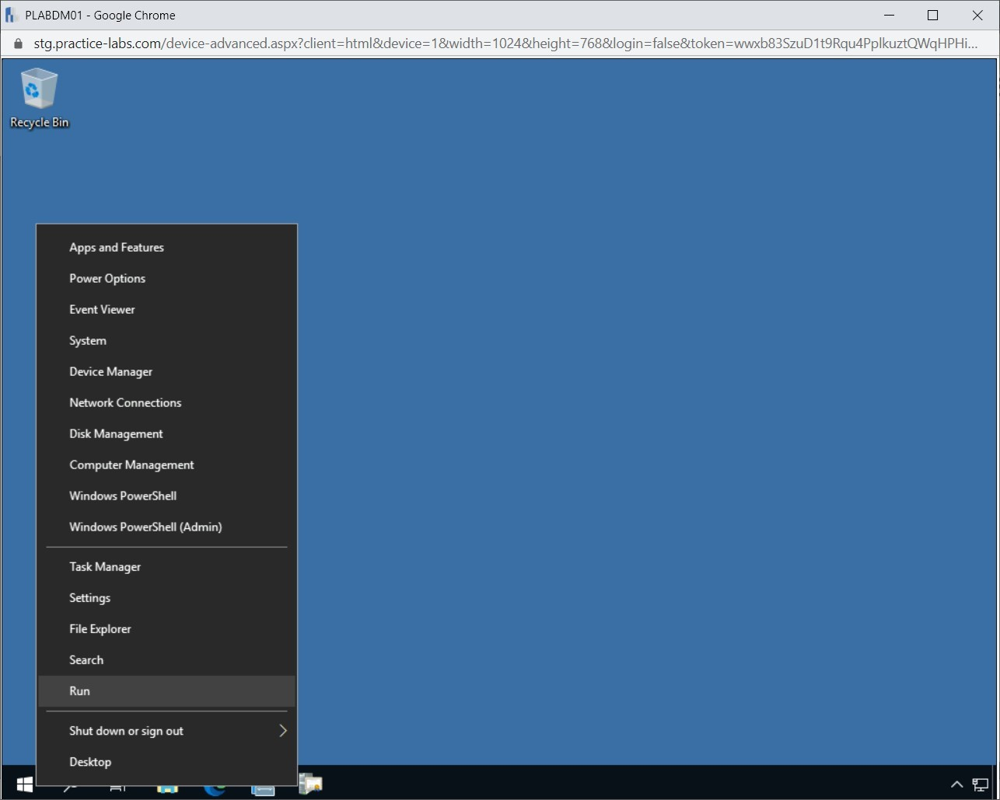Figure 7.4 Screenshot of PLABDM01: Right-clicking Start and selecting Run on the PLABDM01 system.
Step 2
In the Run dialog box, type the following command and press Enter. Alternatively, click OK.
mmc
Figure 7.5 Screenshot of PLABDM01: Typing mmc in the Open text box on the Run dialog box and clicking OK.
Step 3
If you are prompted with the User Access Control dialog box, click Yes.
In the Console1 window, click File and select Add/Remove Snap-in.
Figure 7.6 Screenshot of PLABDM01: Clicking File and selecting the Add/Remove Snap-in option in the Console1 window.
Step 4
In the Add or Remove Snap-ins window, select Certificates and click Add.
Figure 7.7 Screenshot of PLABDM01: Selecting Certificates and clicking Add in the Add or Remove Snap-ins dialog box.
Step 5
In the Certificates dialog box, ensure that My user account option is selected.
Click Finish.
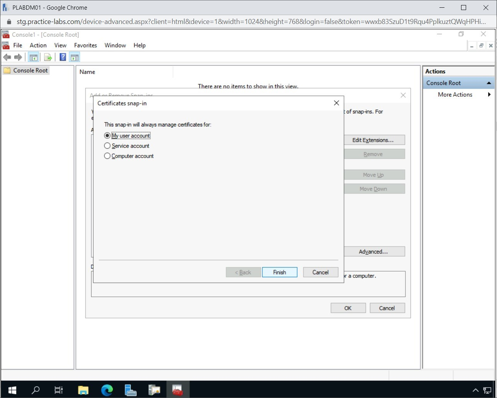Figure 7.8 Screenshot of PLABDM01: Keeping the default selection of My user account and clicking Finish.
Step 6
Click OK to close the Add/Remove Snap-ins dialog box.
Figure 7.9 Screenshot of PLABDM01: Clicking OK to close the Add/Remove Snap-ins dialog box.
Step 7
Back on the Console1 window.
Expand Certificates-Current User node.
Then, right-click the Personal folder, select All Tasks and then select Request New Certificate.
Figure
7.10 Screenshot of PLABDM01: Expanding Certificates-Current User node
and then right-clicking the Personal folder, selecting All Tasks and
then selecting Request New Certificate.
Step 8
On the Before you begin page of the Certificate Enrollment wizard, click Next.
Figure 7.11 Screenshot of PLABDM01: Clicking Next on the Before You Begin page of the Certificate Enrollment wizard.
Step 9
On the Select Certificate Enrollment Policy page, keep the default selection and click Next.
Figure
7.12 Screenshot of PLABDM01: Clicking Next on the Select Certificate
Enrollment Policy page on the Certificate Enrollment wizard.
Step 10
In the Request Certificates page, select the Key Recovery Agent checkbox.
Click Enroll.
 Figure 7.13 Screenshot of PLABDM01: Selecting Key Recovery Agent and clicking Enroll on the Request Certificates dialog box.
Figure 7.13 Screenshot of PLABDM01: Selecting Key Recovery Agent and clicking Enroll on the Request Certificates dialog box.
Step 11
The enrolment for the Key Recovery Agent is being processed.
On the Certificate Installation Results page, click Finish when the page reports a pending enrollment.
Since the Key Recovery Agent certificate is a security-sensitive key, as it indicates “Enrollment pending,” meaning it will have to be issued (approved) manually to the user who requested it.
Figure
7.14 Screenshot of PLABDM01: Clicking Finish on the Certificate
Enrollment dialog box that displays Enrollment pending status.
Minimize the Console1 window.
Task 3 - Issue Key Recovery Agent Certificate
In the previous task, you had enrolled for a Key
Recovery Agent certificate. After the enrollment, the status was shown
as pending. This is because the certificate needs to be manually
approved.
In this task, you will learn to approve the issuance of the Key Recovery Agent certificate.
Step 1
On PLABDM01, restore the Certification Authority window from the taskbar.
Navigate to Pending Requests folder, on the details pane, right-click on the Certificate, point to All Tasks, then click Issue.
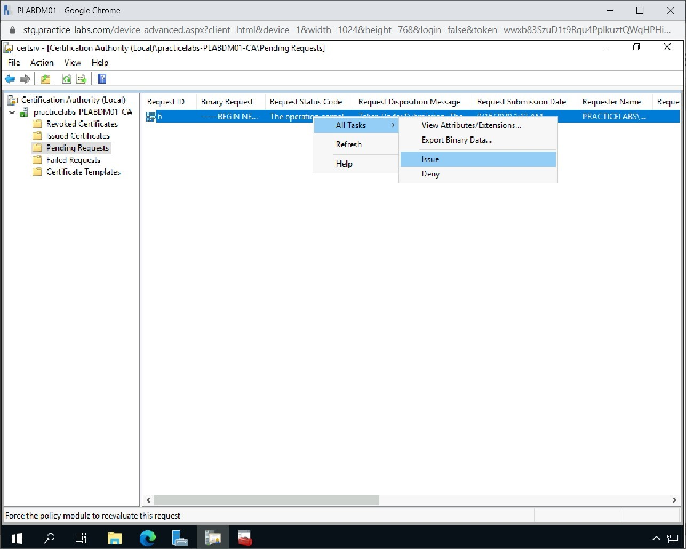Figure
7.15 Screenshot of PLABDM01: Selecting the Pending Requests node in the
left pane and right-clicking the pending certificate, selecting All
Tasks, and then selecting Issue.
Step 2
Click the Issued Certificates folder, right-click the certificate based on the Key Recovery Agent template.
Then, select Open.
Figure
7.16 Screenshot of PLABDM01: Clicking the Issued Certificates folder,
right-clicking the certificate based on the Key Recovery Agent template,
and selecting Open.
Step 3
In the Certificates dialog box, click the Details tab.
Figure 7.17 Screenshot of PLABDM01: Clicking the Details tab on the Certificate dialog box.
Step 4
Under the Details tab, click Copy to File.
Figure 7.18 Screenshot of PLABDM01: Clicking Copy to File button on the Details tab of the Certificate dialog box.
Step 5
On the Welcome to the Certificate Export Wizard page of the Certificate Export Wizard, click Next.
Figure
7.19 Screenshot of PLABDM01: Clicking Next on the Welcome to the
Certificate Export Wizard page on the Certificate Export Wizard.
Step 6
In the Export File Format page, the default DER encoded binary X.509 (.CER) format option is selected.
Click Next.
Figure
7.20 Screenshot of PLABDM01: Keeping the default selection on the
Export File Format page of the Certificate Export Wizard.
Step 7
In the File to Export page, click in the File name box and type the following name in the File name text box:
c:\AdminKRA
Click Next.
Figure
7.21 Screenshot of PLABDM01: Entering the certificate file name in the
File name text box and clicking Next on the File to Export page.
Step 8
Click Finish when you see Completing the Certificate Export Wizard box.
Figure
7.22 Screenshot of PLABDM01: Clicking Finish on the Completing the
Certificate Export Wizard page of the Certificate Export Wizard.
Step 9
Click OK when the message box "The export was successful" appears.
Figure 7.23 Screenshot of PLABDM01: Clicking OK on the Certificate Export Wizard dialog box.
Step 10
Similarly, click OK on the Certificate dialog box to close it.
Minimize the Certification Authority window.
Figure 7.24 Screenshot of PLABDM01: Clicking OK on the Certificate dialog box.
Step 11
Restore the Console1 window from the taskbar.
Right-click the Personal folder, select All Tasks and then select Import.
Figure 7.25 Screenshot of PLABDM01: Right-clicking the Personal folder, selecting All Tasks and then selecting Import.
Step 12
On the Welcome to the Certificate Import Wizard page of the Certificate Import Wizard, click Next.
Figure
7.26 Screenshot of PLABDM01: Clicking Next on the Welcome to the
Certificate Import Wizard page on the Certificate Import Wizard.
Step 13
On the File to Import page, click in the File name box, type the following name:
c:\AdminKRA.cer
Click Next.
Note: You can use the Browse… button to find the AdminKRA.cer certificate file.
Figure
7.27 Screenshot of PLABDM01: Entering the file name in the File name
text box on the File to Import page and then clicking Next.
Step 14
In the Certificate Store page, keep the default location for a certificate in the Personal store and click Next.
Figure 7.28 Screenshot of PLABDM01: Keeping the default selection no the Certificate Store page and clicking Next.
Step 15
When the Completing the Certificate Import Wizard page appears, click Finish.
Figure 7.29 Screenshot of PLABDM01: Clicking Finish on the Completing the Certificate Import Wizard page.
Step 16
Click OK when prompted that the import was successful.
Figure 7.30 Screenshot of PLABDM01: Clicking OK on the Certificate Import Wizard dialog box.
Step 17
Back in the Console1 window, expand Certificates - Current User, expand Personal and click the Certificates folder.
Notice the certificate issued to Administrator with the Intended Purpose - Key Recovery Agent is now available.
Minimize the Console1 window.
Figure
7.31 Screenshot of PLABDM01: Expanding Certificates - Current User,
expanding Personal and clicking the Certificates folder to show the
certificate.
Task 4 - Configure CA for Key Archival
For the purpose of key archival, you need to
configure the Recovery Agents tab in the CA properties. You need to
enable key archival and also set the number of recovery agents to
recover keys.
In this task, you will configure the Certification Authority to keep a copy of all issued certificates by enabling key archival.
To setup key archival on the CA, perform the following steps:
Step 1
On the PLABDM01 server, restore the Certification Authority window from the taskbar if not yet restored.
Right-click practicelabs-PLABDM01-CA and select Properties.
Figure 7.32 Screenshot of PLABDM01: Right-clicking practicelabs-PLABDM01-CA and selecting Properties.
Step 2
In the practicelabs-PLABDM01-CA Properties window, select the Recovery Agents tab.
Figure 7.33 Screenshot of PLABDM01: Clicking the Recovery Agents tab on the practicelabs-PLABDM01-CA Properties dialog box.
Step 3
On the Recovery Agents tab, select the Archive the key option.
Click Add…
Figure 7.34 Screenshot of PLABDM01: Selecting the Archive the key option and then clicking Add.
Step 4
The Key Recovery Agent Selection message box displays the certificate that was issued earlier to the Administrator.
Click OK.
Figure
7.35 Screenshot of PLABDM01: Showing the Windows Security dialog box
mentioning the Key Recovery Agent Selection and then clicking OK.
Step 5
Back in the practitcelabs-PLABDM01-CA Properties dialog, click OK when the certificate is added.
Figure 7.36 Screenshot of PLABDM01: Clicking OK on the CA properties dialog box.
Step 6
In the Certification Authority message box, select Yes to restart Active Directory Certificate Services.
Figure
7.37 Screenshot of PLABDM01: Selecting Yes to restart Active Directory
Certificate Services in the Certificate Authority dialog box.
Step 7
Please wait while the Active Directory Certificate Services stops and starts.
Figure 7.38 Screenshot of PLABDM01: Showing the starting status of the Active Directory Certificate Services dialog box.
89702e5d-d25a-44d4-b0df-b081bb2e2dbd
After that, close the CA properties dialog box.
Step 8
By default, when you connect to a device in Practice
Labs, you are automatically logged in - usually as the administrator.
You will need to re-enable this feature so that you will be logged in
automatically for the next module.
On the Practice Labs web page, click the Access your settings tab.
Under the Device heading, there is an option named Server auto login. Click the Enable button.
d31298f5-3011-4089-bf06-fbf08c44a7f9
Keep all devices that you have powered on in their current state and proceed to the review section.
Review
Well done, you have completed the Implement a Public Key Infrastructure Practice Lab.
c6e74811-6d1f-4779-94c2-34fcca239022
d4ebcd8f-39d3-4ff4-828b-3de50d0edffa
6db99d7d-cf20-499f-a6ee-a87b7dc7cd4d
bfe65b9a-60d3-42a6-b757-541422840401
044ce4d2-c472-43e7-b294-c0c405bd166f
964e331f-42d0-4fe4-beea-2930f1274d2d
aaaaaaaa-1111-1111-1111-193f35a24fe3
Summary
You completed the following exercises:
- Exercise 1 - PKI Fundamentals
- Exercise 2 - Create a Self-signed Certificate
- Exercise 3 - Install and Configure Active Directory Certificate Services
- Exercise 4 - Configure Certificate Revocation Lists (CRLs)
- Exercise 5 - Manage Certificate Templates
- Exercise 6 - Configure Certificate Auto Enrollment
- Exercise 7 - Implement Key Archival
You should now be able to:
- Create a Self-signed Certificate
- Install Active Directory Enterprise Root Certificate Service
- Configure Active Directory Certificate Services
- Install Subordinate CA
- Configure Subordinate CA
- Request User Certificates
- Verify Issued Certificate
- Configure a New Path for CRLs
- Add Certificate Managers
- View the Certificate Templates
- Configure a Customized Certificate Template
- Create a Group Policy for Certificate Auto Enrollment
- Verify the Certificate Issuance
- Enable a Key Recovery Agent
- Request for Key Recovery Agent Certificate
- Issue Key Recovery Agent Certificate
- Configure CA for Key Archival
After completing this module, you should have knowledge of:
- PKI Concepts
- Types of Certificates
- Certificate Formats
Feedback
067744a4-4299-4662-b5be-04dbb636a007
Shutdown all virtual machines used in this lab. Alternatively, you can log out of the lab platform.